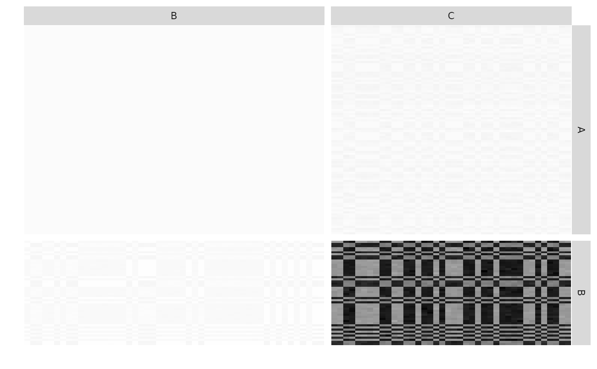
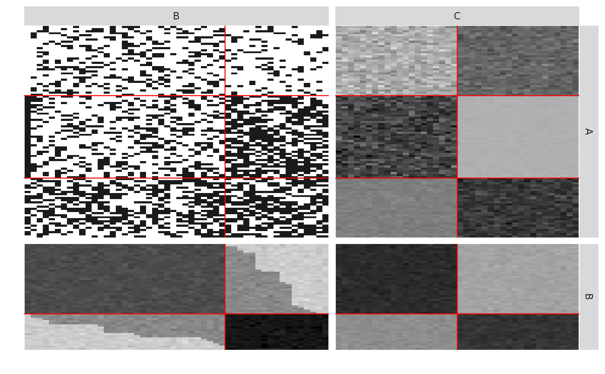

This function samples a Multipartite Stochastic Block Models, with various model for the distribution of the edges: Bernoulli, Poisson, or Gaussian models
sampleMultipartiteSBM(
nbNodes,
blockProp,
archiMultipartite,
connectParam,
model,
directed,
dimLabels = NULL,
seed = NULL
)| nbNodes | number of nodes in each functional group involved in the multipartite network |
|---|---|
| blockProp | a list of parameters for block proportions in each functional group |
| archiMultipartite | a matrix with two columns and nbNetworks lines, each line specifying the index of the functional groups in interaction. |
| connectParam | list of parameters for connectivity (of length nbNetworks). Each element is a list of one or two elements: a matrix of means 'mean' and an optional matrix of variances 'var', the sizes of which must match |
| model | a vector of characters describing the model for each network of the Multipartite relation between nodes ( |
| directed | a vector of logical, directed network or not for each network. Default is |
| dimLabels | an optional list of labels for functional group involved in the network |
| seed | numeric to set the seed. |
a list of two elements : simulatedMemberships are the clustering of each node in each Functional Group,
multipartiteNetwork is the list of the simulated networks (each one being a simple or bipartite network)
### =======================================
### MULTIPARTITE SBM : 4 networks between 3 Functional Groups
## Graph parameters
# About the Functional Groups (FG)
nbNodes <- c(100,50,40)
blockProp <- vector("list", 3) # parameters of clustering in each functional group
blockProp[[1]] <- c(0.4,0.3,0.3) # in Functional Group 1
blockProp[[2]] <- c(0.6,0.4) # in Functional Group 2
blockProp[[3]] <- c(0.6,0.4) # in Functional Group 3
# About the interactions between the FG
archiMultipartite <- rbind(c(1,2),c(2,3),c(2,2),c(1,3)) #
model <- c('bernoulli','poisson','gaussian','gaussian') # type of distribution in each network
# for each network : directed or not (not required for an interaction between two different FG)
directed <- c( NA, NA , FALSE , NA)
connectParam <- list()
connectParam[[1]] <- list(mean = matrix(c(0.3, 0.3, 0.5, 0.2, 0.6, 0.6),3,2))
connectParam[[2]] <- list(mean = matrix(c(1000 , 500, 400 , 950),2,2))
connectParam[[3]] <- list(mean = matrix(c(10, 0, -10, 20), 2,2), var = matrix(1,2,2))
connectParam[[4]] <- list(mean = matrix(c(3, 23 ,11 ,16 , 2 ,25), 3,2))
connectParam[[4]]$var <- matrix(c(10,20,1,5,0.1,10), 3,2)
dimLabels <- c('A','B','C')
## Graph Sampling
mySampleMBM <- sampleMultipartiteSBM(nbNodes, blockProp,
archiMultipartite,
connectParam, model, directed,
dimLabels,seed = 3)
listSBM <- mySampleMBM$listSBM
memberships <- mySampleMBM$memberships
plotMyMultipartiteMatrix(listSBM)

plotMyMultipartiteMatrix(listSBM,plotOptions = list(normalized = TRUE))
plotMyMultipartiteMatrix(listSBM,memberships = memberships,plotOptions = list(normalized = TRUE))
